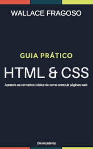

O comando document.getElementById('teste') é escrito em linguagem Phyton.
num = int(inplit('Digite um número'))
if num % 2 == 0:
print(f'o número {num} é PAR')
else:
print(f'o número {num} é ÍMPAR')
print(' Fim do programa')
como diria o pai de um amigo: o computador é um burro muito rápido
Segundo Wallace fragoso, no seu livro de HTML E CSS:

link do livro
Uma tabela é composta de Colunas e Linhas, e a interseção da coluna e da linha é chamado de <célula>, assim como é em qualquer planilha eletrônica.
Estou estudando HTML e CSS. Estou adorando!
Você pode também acessar a minha segunda página!!!